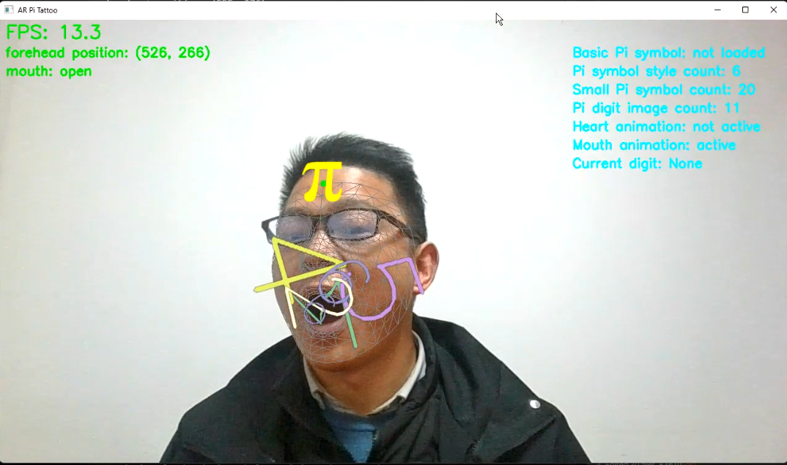

AR Pi Tattoo - 有趣的增强现实π纹身应用
项目介绍

技术实现
1 | # 克隆仓库 |

AR Pi Tattoo 是我最近开发的一个有趣的增强现实应用，它可以在用户的额头上投影虚拟π符号纹身。除此之外，用户还可以通过特定的手势来更改纹身样式，比如切换发光效果、旋转动画或粒子效果等。这个项目最初是为了庆祝π日（3月14日）而创建的，但它展示了增强现实技术在创意领域的潜力。
功能特点
- 实时人脸检测和额头跟踪：使用MediaPipe库精确定位用户面部特征
- AR投影：将π符号准确地投影到用户额头上，并随头部移动
- 多种纹身样式：包括基础样式、发光效果、旋转动画和粒子效果
- 手势识别：通过手势切换不同的纹身样式
- 跨平台兼容：在Windows、macOS和Linux上均可运行
技术实现
本项目主要使用以下技术栈：
- Python 3.8+：核心编程语言
- OpenCV 4.5+：图像处理和视觉效果
- MediaPipe 0.8.9+：面部特征检测和手势识别
- NumPy：数学计算和图像变换
实现AR π纹身的关键步骤包括：
- 人脸检测：使用MediaPipe Face Mesh检测和跟踪468个面部关键点
- 额头定位：基于面部关键点计算额头的位置和角度
- π符号渲染：根据额头位置计算π符号的投影变换
- 手势识别：使用MediaPipe Hands检测特定手势
- 效果切换：根据识别的手势切换不同的纹身效果
使用方法
使用AR Pi Tattoo非常简单：
1 | # 克隆仓库 |

运行后，应用会打开电脑摄像头并开始检测你的面部。在检测到面部后，π符号会自动投影到额头上。你可以通过以下方式与应用交互：
- 用手做圆形手势可以切换纹身样式
- 按’q’键退出应用
技术难点与解决方案
在开发过程中，我遇到了以下几个技术挑战：
1. 面部跟踪的稳定性
问题：面部检测结果在不同帧之间可能会抖动，导致纹身位置不稳定。
解决方案：实现了一个简单的平滑滤波器，对检测到的关键点位置进行时间平均，减少抖动效果。
2. 纹身姿态调整
问题：当用户转头时，纹身需要自然地跟随面部变化角度和大小。
解决方案：利用面部关键点计算头部的3D姿态，然后应用相应的透视变换到π符号上。
3. 手势识别的稳健性
问题：在各种复杂背景和光照条件下保持手势识别的准确性。
解决方案：设计了基于手指位置关系的几何判断算法，而不是单纯依赖预训练模型，提高了识别的稳健性。
未来改进方向
这个项目还有很多可以改进和扩展的空间：
- 更多纹身样式：增加更多创意和个性化的纹身效果
- 用户自定义符号：允许用户上传自己的图案作为虚拟纹身
- 多人支持：同时检测和处理画面中的多个人脸
- 移动端适配：开发移动应用版本，提高便携性
- 增强社交功能：添加拍照分享、视频录制等功能
开源贡献
AR Pi Tattoo 是一个开源项目，欢迎任何形式的贡献！如果你有兴趣参与：
- 在 GitHub仓库 上提交 Issue 或 Pull Request
- 通过改进文档、添加新功能或修复 bug 来参与开发
- 分享你使用 AR Pi Tattoo 创作的作品
总结
AR Pi Tattoo 展示了如何使用开源工具创建有趣的增强现实应用。它不仅是一个娱乐应用，也展示了计算机视觉和AR技术的实际应用场景。希望这个项目能够启发更多人探索AR领域的创意可能性。
如果你有任何问题或建议，欢迎通过以下方式联系我：
- 微信：znzatop
- GitHub：nxu-game